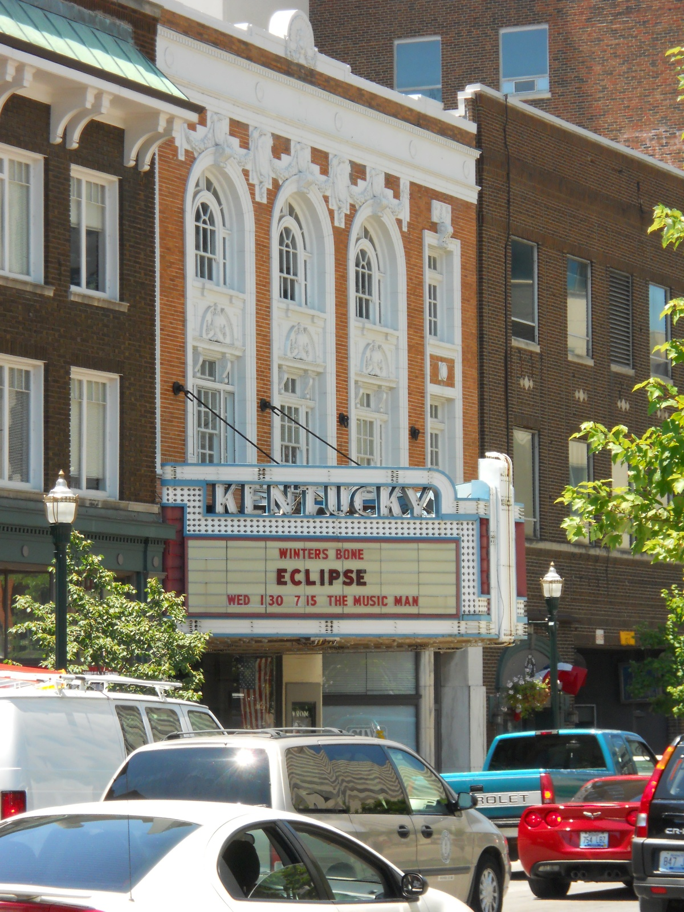
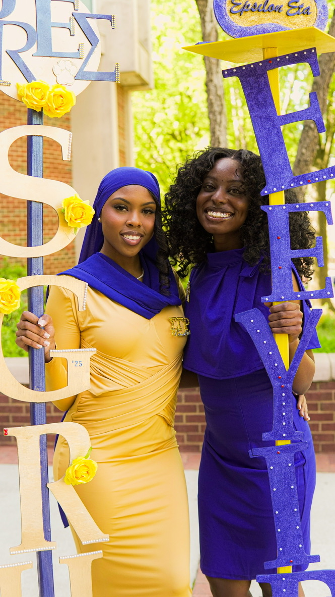

Assalamualikum, Greetings, & Hello!
My name is Haniyah Hakim. I am a recent graduate from Spelman College and a current student at the
University of Michigan School of Information studying UX Design & Research. This website serves as a
final project for my web design course, where I hope to show off my design portfolio through my
personal, hobbies, and aesthetics.
Below I will take you through my life before Michigan and hopefully teach you something new about me.
Scroll down to get to know me, my life, and my work!
My Background
I was born and raised in Louisville, Kentucky, as the oldest daughter in my family. I attended private school for most of my life, until high school, when I transitioned to public school and had to adjust to a new environment. I grew up Muslim and surrounded by diverse cultures, experiencing a wide range of foods, languages, and traditions.
For my undergraduate studies, I attended Spelman College, the nation’s #1 HBCU, where I majored in Art with a minor in Interactive Media. Throughout my time there, I explored different aspects of my identity while also shaping my goals for life beyond Spelman’s gates. My alma mater’s motto, “A Choice to Change the World,” continues to guide me, even during my time here at Michigan.
One cool fact about me is that I’m a member of a Black Greek Lettered Organization: Sigma Gamma Rho Sorority, Incorporated. Although I joined during my undergraduate years, my involvement extends beyond campus. Being part of this organization connects me to community service, fellowship/sisterhood, and philanthropic work. My sorority holds a special place in my heart and my life, especially since both my mother and my aunt are members as well.
.png)

